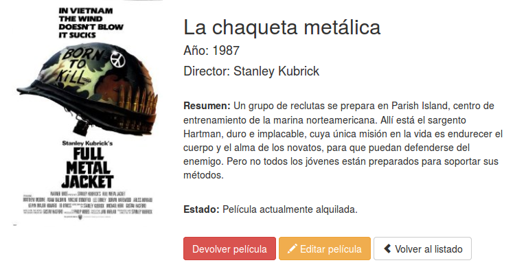

Hasta el momento hemos visto solamente como devolver una cadena para una ruta y como asociar una vista a una ruta directamente en el fichero de rutas. Pero en general la forma recomendable de trabajar será asociar dichas rutas a un método de un controlador. Esto nos permitirá separar mucho mejor el código y crear clases (controladores) que agrupen toda la funcionalidad de un determinado recurso. Por ejemplo, podemos crear un controlador para gestionar toda la lógica asociada al control de usuarios o cualquier otro tipo de recurso. Como ya hemos visto antes, los controladores son el punto de entrada de las peticiones de los usuarios y son los que deben contener toda la lógica asociada al procesamiento de una petición, encargándose de realizar las consultas necesarias a la base de datos, de preparar los datos y de llamar a la vista correspondiente con dichos datos.
Los controladores se almacenan en ficheros PHP en la carpeta app/controllers, sin embargo también podemos crear sub-carpetas dentro de esta carpeta para organizarnos mejor. En este caso, la estructura de carpetas que creemos no tendrá nada que ver con la ruta asociada y, de hecho, a la hora de hacer referencia al controlador tampoco hará falta indicar la carpeta donde se encuentra.
A continuación se incluye un ejemplo básico de un controlador almacenado en el fichero app/controllers/UserController.php:
class UserController extends BaseController
{
/**
* Mostrar información de un usuario.
*/
public function showProfile($id)
{
$user = User::find($id);
return View::make('user.profile', array('user' => $user));
}
}
Como se puede ver el controlador de ejemplo extiende de la clase BaseController. Esta clase, que también está almacenada en la carpeta app/controllers, nos sirve para centralizar toda la lógica que vayan a utilizar de forma compartida los controladores de nuestra aplicación. Si abrimos esta clase veremos que a su vez extiende de la clase Controller, la cual se utiliza para definir un controlador en Laravel. Por defecto solo incluye un método, pero podemos añadir en la misma todos los métodos que necesitemos.
En el código de ejemplo, el método showProfile($id) lo único que realiza es obtener los datos de un usuario, generar la vista user.profile a partir de los datos obtenidos y devolverla como valor de retorno para que se muestre por pantalla.
Una vez definido un controlador ya podemos asociarlo a una ruta. Para esto tenemos que modificar el fichero de rutas routes.php de la forma:
Route::get('user/{id}', 'UserController@showProfile');
Como se puede ver, en lugar de pasar una función como segundo parámetro, tenemos que escribir una cadena que contenga el nombre del controlador, seguido de una arroba @ y del nombre del método que queremos asociar. No es necesario añadir nada más, ni la carpeta en la que se encuentra el controlador, ni los parámetros que recibe el método en cuestión, todo esto se hace de forma automática.
Además, si queremos generar la URL que apunte a una acción de un controlador, Laravel nos facilita los siguientes métodos (equivalentes):
$url = URL::action('FooController@method');
$url = action('FooController@method');
Una opción interesante de los controladores es poder indicar el layout que van a utilizar las vistas que se devuelvan. De esta forma se puede desacoplar las vistas de los layouts, permitiendo que una misma vista se puede renderizar con diferentes layouts. A continuación se incluye un ejemplo:
class UserController extends BaseController
{
/**
* Layout a utilizizar en las respuestas
*/
protected $layout = 'layouts.master';
/**
* Mostrar información de un usuario.
*/
public function showProfile()
{
$this->layout->content = View::make('user.profile');
}
}
Como se puede ver, solo tenemos que establecer el valor de la variable protegida layout con el layout a utilizar y posteriormente, en vez de devolver la vista, asignarla a una variable del layout.
Laravel también permite definir fácilmente la creación de controladores como recursos que capturen todas las rutas de un derminado dominio. Por ejemplo, capturar todas las consultas que se realicen a la URL "users" o "users" seguido de cualquier cosa (por ejemplo "users/profile"). Para esto en primer lugar tenemos que definir la ruta en el fichero de rutas usando Route::controller de la forma:
Route::controller('users', 'UserController');
Esto quiere decir que todas las peticiones realizadas a la ruta "users" o subrutas de "users" se redirigirán al controlador UserController. Además se capturarán las peticiones de cualquier tipo, ya sean GET o POST, a dichas rutas. Para gestionar estas rutas en el controlador tenemos que seguir un patrón a la hora de definir el nombre de los métodos: primero tendremos que poner el tipo de petición y después la sub-ruta a la que debe de responder. Por ejemplo, para gestionar las peticiones tipo GET a la URL "users/profile" tendremos que crear el método "getProfile". La única excepción a este caso es "Index" que se referirá a las peticiones a la ruta raíz, por ejemplo "getIndex" gestionará las peticiones GET a "users". A continuación se incluye un ejemplo:
class UserController extends BaseController
{
public function getIndex()
{
//
}
public function postProfile()
{
//
}
public function anyLogin()
{
//
}
}
Además, si queremos crear rutas con varias palabras lo podemos hacer usando la notación "CamelCase" en el nombre del método. Por ejemplo el método "getAdminProfile" será parseado a la ruta "users/admin-profile".
También podemos definir un método especial que capture las todas las peticiones "perdidas" o no capturadas por el resto de métodos. Para esto simplemente tenemos que definir un método con el nombre missingMethod que recibirá por parámetros la ruta y los parámetros de la petición:
public function missingMethod($parameters = array())
{
//
}
Laravel nos permite aplicar filtros a las rutas que definimos en el fichero routes.php. Esta característica es muy útil para por ejemplo validar que solo puedan acceder usuarios validados a determinadas áreas de nuestro sitio web o realizar otro tipo de validaciones.
Laravel incluye por defecto algunos de los filtros más comunes, los cuales están definidos en el fichero app/filters.php. Por ejemplo incluye los filtros auth y guest que nos permiten validar si el usuario que visita la ruta está logueado o no, o el filtro csrf para protegernos de ataques tipo cross-site request forgery como veremos más adelante.
Pero además de estos filtros nos permite definir nuestros propios filtros. Para esto tenemos que añadir el filtro al fichero app/filters.php, por ejemplo:
Route::filter('old', function()
{
if (Input::get('age') < 200)
{
return Redirect::to('home');
}
});
Si el filtro devuelve una respuesta, una redirección u otra cosa, entonces esta se considerará la respuesta de la petición. Si no devuelve nada entonces se continuará con el procesamiento normal.
Para añadir un filtro a una ruta tenemos que editar el fichero routes.php e incluir, para la ruta en cuestión el filtro como un array asociativo de la forma:
Route::get('user', array('before' => 'old', function()
{
return 'Tienes más de 200 años!';
}));
Donde before indica que el filtro se ejecutará antes que el procesamiento de la función respuesta (en general será siempre así) y old es el nombre del filtro (el que habíamos creado antes de ejemplo, también podría ser auth, guest, csrf o alguno otro que nos hayamos definido).
Para añadir un filtro cuando indicamos que la ruta la procese un controlador lo tenemos que hacer de la forma:
Route::get('user', array('before' => 'old', 'uses' => 'UserController@showProfile'));
Para añadir varios filtros a una ruta simplemente los tenemos que separar mediante |:
Route::get('user', array('before' => 'auth|old', function()
{
return 'Estás logueado y tienes más de 200 años!';
}));
El comando php artisan routes, además de mostrar una tabla con las rutas definidas para la aplicación, también incluye los filtros que tienen asignadas estas rutas. Por lo tanto es muy útil para comprobar que todas las rutas y filtros que hemos definido se hayan creado correctamente.
Laravel permite aplicar un filtro a un grupo de rutas agrupándolas todas dentro de un Route::group, de esta forma solo tendremos que especificar el filtro una vez y además nos permitirá dividir las rutas en secciones (distinguiendo mejor a que secciones se les está aplicando un filtro):
Route::group(array('before' => 'auth'), function()
{
Route::get('/', function()
{
//
});
Route::get('user/profile', function()
{
//
});
});
Como respuesta a una petición también podemos devolver una redirección. Esta opción será interesante cuando, por ejemplo, el usuario no esté logueado y lo queramos redirigir al formulario de login, o cuando se produzca un error en la validación de una petición y queramos redirigir a otra ruta. Para esto simplemente tenemos que utilizar:
return Redirect::to('user/login');
// O redirigir a un método de un controlador:
return Redirect::action('HomeController@index');
// Si queremos añadir parámetros al llamar al método podemos hacer:
return Redirect::action('UserController@profile', array(1));
return Redirect::action('UserController@profile', array('user' => 1));
Las redirecciones también se suelen utilizar tras obtener algún error en la validación del formulario. En este caso, para que al mostrar el formulario con los errores producidos podamos añadir los datos que había escrito el usuario tendremos que añadir:
return Redirect::to('form')->withInput();
// O para reenviar los datos de entrada excepto algunos:
return Redirect::to('form')->withInput(Input::except('password'));
Laravel también incluye métodos que nos ayudan para la generación de formularios en nuestro código. En esta sección vamos a ver las opciones más básicas: como abrir y cerrar formularios, y como añadir etiquetas y algunos otros tipos de campos.
Nota: Los métodos de Laravel únicamente generan de las etiquetas HTML del formulario, pero no aplican ningún estilo ni clase CSS.
Para abrir y cerrar un formulario que apunte a la URL actual y utilice el método POST utilizaríamos el siguiente código:
{{ Form::open() }}
//
{{ Form::close() }}
Si queremos cambiar la URL de envío de datos se lo podemos añadir por parámetro:
{{ Form::open(array('url' => 'foo/bar')) }}
Por defecto el formulario se enviará por POST, pero si queremos cambiar el método de envío también lo podemos especificar en los parámetros:
{{ Form::open(array('url' => 'foo/bar', 'method' => 'put')) }}
Nota: el envío de formularios en realidad solamente soporta los métodos POST y GET, por lo que si indicamos que se utilice PUT o DELETE el sistema de forma automática añadirá un campo oculto para gestionarlo.
Laravel también permite especificar la URL de envío del formulario indicando la acción del controlador de la forma:
{{ Form::open(array('action' => 'Controller@method')) }}
// También podemos pasarle parámetros a la ruta
{{ Form::open(array('action' => array('Controller@method', $user->id))) }}
Además, si queremos que el formulario pueda enviar archivos tendremos que especificarlo añadiendo el atributo files con valor true en los parámetros:
{{ Form::open(array('url' => 'foo/bar', 'files' => true)) }}
El CSRF (del inglés Cross-site request forgery o falsificación de petición en sitios cruzados) es un tipo de exploit malicioso de un sitio web en el que comandos no autorizados son transmitidos por un usuario en el cual el sitio web confía.
Laravel proporciona una forma fácil de protegernos de este tipo de ataques. De forma automática, al crear un formulario que utilice el método POST, PUT o DELETE, se le añadirá un campo oculto con una clave utilizada para la validación de la sesión del usuario. Lo único que nos faltaría es añadir para esa ruta (la del envío de la petición POST, PUT o DELETE) que tiene que aplicar el filtro csrf, de la forma:
Route::post('profile', array('before' => 'csrf', 'uses' => 'UserController@postProfile'));
Para crear una etiqueta simplemente tenemos que usar el constructor Form::label, el cual recibe como primer parámetro el atributo for de la etiqueta (para asociar una etiqueta con un input) y como segundo parámetro el texto a mostrar:
{{ Form::label('email', 'Dirección de E-Mail') }}
Además podemos añadir parámetros extra a las etiqueta pasando un array asociativo como tercer parámetro. Esto nos permitirá especificar, por ejemplo las clases a aplicar sobre la etiqueta, estilos, etc.
{{ Form::label('email', 'E-Mail Address', array('class' => 'awesome')) }}
Para crear un campo de texto usamos el constructor Form::text:
{{ Form::text('username') }}
// También podemos especificar un valor por defecto:
{{ Form::text('email', 'example@gmail.com') }}
A continuación se incluyen más ejemplos para crear campos de tipo textarea, password y hidden:
{{ Form::textarea('textarea') }}
{{ Form::password('password') }}
{{ Form::hidden('hidden') }}
También podemos crear otro tipo de inputs (como email, number, etc.). En general recibirán como segundo parámetro el valor por defecto y como tercer parámetro el array de atributos del mismo (el cual nos permitirá indicar la clase a aplicar, estilos, etc.).
{{ Form::email($name, $value = null, $attributes = array()) }}
Para crear campos tipo checkbox o tipo radio button utilizamos los siguientes constructores:
{{ Form::checkbox('name', 'value') }}
{{ Form::radio('name', 'value') }}
Además podemos incluir un tercer parámetro para indicar que el campo tiene que estar seleccionado por defecto.
{{ Form::checkbox('name', 'value', true) }}
{{ Form::radio('name', 'value', true) }}
Para generar un input para subir ficheros utilizamos el siguiente constructor:
{{ Form::file('image') }}
En este caso tendremos que crear el formulario especificando la opción
filescon valor true para permitir el envío de archivos.
Para crear un desplegable tipo select utilizamos el constructor Form::select pasándole como primer parámetro el nombre del campo y como segundo el array de valores a mostrar:
{{ Form::select('size', array('L' => 'Large', 'S' => 'Small')) }}
// Para seleccionar un valor por defecto lo añadimos como tercer parámetro:
{{ Form::select('size', array('L' => 'Large', 'S' => 'Small'), 'S') }}
A continuación se incluyen ejemplo para crear un botón tipo submit y otro botón normal:
{{ Form::submit('Enviar') }}
{{ Form::button('Enviar') }}
Si por ejemplo queremos aplicarle alguna clase lo podemos añadir como un array en el segundo parámetro:
{{ Form::button('Enviar', array('class' => 'btn btn-primary') ) }}
En los ejercicios de esta parte vamos a continuar con el sitio Web que empezamos para la gestión de un videoclub. En primer lugar añadiremos los controladores y métodos asociados a cada ruta, y posteriormente también completaremos las vistas usando las plantillas Blade y formularios.
En este primer ejercicio vamos a crear los controladores necesarios para gestionar nuestra aplicación y actualizaremos el fichero de rutas para que los utilice.
En primer lugar creamos los dos controladores que nos van a hacer falta: CatalogController.php y UserController.php. Como base podemos coger el controlador que viene de ejemplo HomeController.php y renombrarlo. Este controlador ya extiende de la clase base BaseController y tiene un método creado. Además nos tenemos que acordar de cambiar también el nombre de la clase por el que corresponda.
A continuación vamos a añadir los métodos que vamos a necesitar en estos controladores. En UserController.php tendremos que crear tres métodos y en CatalogController.php cuatro, en la siguiente tabla resumen podemos ver un listado de los métodos por controlador y las rutas que tendrán asociadas:
| Ruta | Controlador | Método |
|---|---|---|
| / | UserController | getHome |
| login | UserController | getLogin |
| logout | UserController | getLogout |
| catalog | CatalogController | getIndex |
| catalog/show/{id} | CatalogController | getShow |
| catalog/create | CatalogController | getCreate |
| catalog/edit/{id} | CatalogController | getEdit |
Acordaros que los métodos getShow y getEdit tendrán que recibir como parámetro el $id del elemento a mostrar, por lo que la definición del método en el controlador tendrá que ser como la siguiente:
public function getShow($id)
{
return View::make('catalog.show', array('id'=>$id));
}
Por último vamos a cambiar el fichero de rutas routes.php para que todas las rutas que teníamos definidas apunten a los nuevos métodos de los controladores, por ejemplo:
Route::get('/', 'UserController@getHome');
El return con la generación de la vista que teníamos puesto para cada ruta lo moveremos al método del controlador correspondiente.
En este ejercicio vamos a completar los métodos del controlador de usuarios y sus vistas asociadas:
Método getHome
En este método de momento solo vamos a hacer una redirección a la acción de login: return Redirect::action('UserController@getLogin');. Más adelante tendremos que distinguir si el usuario está logueado o no.
Método getLogout
En el método para cerrar la sesión también haremos una redirección a la acción de login. Más adelante tendremos que completar este método para que cierre la sesión abierta.
Método getLogin
En este método vamos a modificar su vista asociada para incluir el formulario de acceso. En los materiales de los ejercicios podéis encontrar una plantilla login.blade.php para esta vista con casi todas las secciones ya completadas (solo faltan un par de TODOs). Esta plantilla además tiene ya aplicados los estilos de Bootstrap. De momento solo tenéis que completar la parte visual, no es necesario que el formulario realice ninguna acción más.
En este ejercicio vamos a completar los métodos del controlador del catálogo y todas sus vistas asociadas:
Método getIndex
Este método tiene que mostrar un listado de todas las películas que tiene el videoclub. El listado de películas lo podéis obtener del fichero array_peliculas.php facilitado con los materiales. Este array de películas lo podéis copiar de momento como variable miembro de la clase (más adelante las almacenaremos en la base de datos). En el método del controlador simplemente tendremos que modificar la generación de la vista para pasarle este array de películas completo ($this->arrayPeliculas).
Y en la vista correspondiente simplemente tendremos que incluir el siguiente trozo de código en su sección content:
<div class="row">
@foreach( $arrayPeliculas as $key => $pelicula )
<div class="col-xs-6 col-sm-4 col-md-3 text-center">
<a href="{{URL::to('/catalog/show/' . $key )}}">
<img src="{{$pelicula['poster']}}" style="height:200px"/>
<h4 style="min-height:45px;margin:5px 0 10px 0">
{{$pelicula['title']}}
</h4>
</a>
</div>
@endforeach
</div>
Como se puede ver en el código, en primer lugar se crear una fila (usando el sistema de rejilla de Bootstrap) y a continuación se realiza un bucle foreach utilizando la notación de Blade para iterar por todas las películas. Para cada película obtenemos su posición en el array y sus datos asociados, y generamos una columna para mostrarlos. Es importante que nos fijemos en como se itera por los elementos de un array de datos y en la forma de acceder a los valores. Además se ha incluido un enlace para que al pulsar sobre una película nos lleve a la dirección /catalog/show/{$key}, siendo key la posición de esa película en el array.
Método getShow
Este método se utiliza para mostrar la vista detalle de una película. Hemos de tener en cuenta que el método correspondiente recibe un identificador que (de momento) se refiere a la posición de la película en el array. Por lo tanto, tendremos que coger dicha película del array ($this->arrayPeliculas[$id]) y pasársela a la vista.
En esta vista vamos a crear dos columnas, la primera columna para mostrar la imagen de la película y la segunda para incluir todos los detalles. A continuación se incluye la estructura HTML que tendría que tener esta pantalla:
<div class="row">
<div class="col-sm-4">
{{-- TODO: Imagen de la película --}}
</div>
<div class="col-sm-8">
{{-- TODO: Datos de la película --}}
</div>
</div>
En la columna de la derecha se tendrán que mostrar todos los datos de la película. Para mostrar el estado de la película consultaremos el valor rented del array, el cual podrá tener dos casos:
Además tenemos que incluir dos botones más, un botón que nos llevará a editar la película y otro para volver al listado de películas.
Nota: los botones de alquilar/devolver de momento no tienen que funcionar. Acordaros que en Bootstrap podemos transformar un enlace en un botón, simplemente aplicando las clases "btn btn-default" (más info en: http://getbootstrap.com/css/#buttons).
Esta pantalla finalmente tendría que tener una apariencia similar a la siguiente:

Método getCreate
Este método mostrará el formulario para añadir una película, el cual tendrá que tener los siguientes campos:
| Label | Name | Tipo de campo |
|---|---|---|
| Título | title | text |
| Año | year | text |
| Director | director | text |
| Poster | poster | text |
| Resumen | synopsis | textarea |
Además añadiremos un botón al final con el texto "Añadir película".
Como base podemos coger el formulario que hemos creado para la vista de login y modificarlo para adaptar a esta vista.
De momento el formulario no tendrá que funcionar ni enviar nada. Más adelante completaremos esta funcionalidad.
Método getEdit
Este método permitirá modificar el contenido de una película. El formulario será exactamente igual al de añadir película, así que lo podemos copiar y pegar en esta vista y simplemente cambiar el título y el texto del botón de envío. De momento no tendremos que hacer nada más, más adelante lo completaremos para que se complete con los datos de la película a editar.